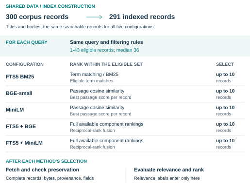
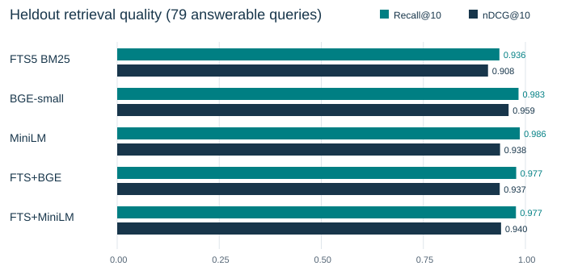

Reproducible Retrieval Evaluation
A Workbench for Lexical, Semantic, and Hybrid Search
Nathan Chandrasekar
Technical report accompanying software version 1.0.0.
Abstract
How do lexical, semantic, and hybrid search differ in ranking quality, recall, and query latency when they use the same records and filtering rules? I compare SQLite FTS5 BM25, BGE-small-en-v1.5, all-MiniLM-L6-v2, and two equal-weight reciprocal-rank-fusion hybrids using a reproducible evaluation workbench. The synthetic dataset contains 300 records and 188 labeled queries; 291 records are indexed, and each query searches 1-43 eligible records, with median 36. The reported runs re-execute a development-selected configuration on known query splits. On 79 answerable held-out queries, BGE obtains nDCG@10 of 0.9588 and recall@10 of 0.9831; MiniLM obtains 0.9379 and 0.9863; lexical recall is 0.9363. MiniLM has lower observed query latency than BGE in both held-out passes. The hybrids do not consistently improve on their semantic components. Small eligible pools make recall saturate for exhaustive methods; a descriptive larger-pool analysis accompanies the full result. A repeat preserves every quality aggregate while timings vary. The software provides inspectable rankings, complete-record checks, recorded results, and commands to reproduce the comparison.
1. Question and contribution
Retrieval comparisons are easier to interpret when every method uses the same searchable text, filtering rules, relevance labels, and treatment of failures. I built this workbench to measure those methods together and check that the returned records remain complete. A failed execution is reported explicitly, rather than mistaken for a valid measurement.
The task is to retrieve evidence about fictional project facts, decisions, preferences, observations, and code references. Queries can request current or historical records, distinguish same-name entities, or require several records. Both query splits share the corpus; each query ranks only the records allowed by its rules.
The contribution is reusable evaluation software and a documented comparison. Versioned datasets, interchangeable retrieval adapters, checks against the evaluation rules, and compatible-run comparisons support JSON, Markdown, and static HTML reports. The source distribution includes tests, pinned dependency and model acquisition, raw observations, and this report.
2. Dataset and filtering rules
The corpus contains thirty fictional project families with ten records each. Its 300 records comprise 253 current, 29 superseded, seven disputed, two revoked, and nine deleted records. Deleted records retain metadata but have null bodies; neither their title nor body is indexed. Each method indexes the same 291 remaining records.
The 188 queries form development and original held-out splits of 94 queries from fifteen families each. Each split has 79 answerable queries and fifteen with empty relevance sets. Configuration selection used the development queries and labels; documents from both splits were available for indexing. The reported re-evaluation uses these now-known splits.
Construction and review
The synthetic records, queries, and relevance labels were generated with OpenAI Codex. Before scoring, a separate model-assisted review examined 20 of 188 queries, ten per split, without access to retrieval scores and corrected two missing grade-1 labels.
The corrections added an illustration of rainfall gating in the fictional Orchard irrigation project and an observation illustrating the boarding deadline in the Tide ticketing project. Labels follow the written records and query rules; each query includes a rationale explaining its expected evidence.
Relevance and eligibility
Grade 3 directly answers a query or an independently requested part. Grade 2 supplies an explicit partial answer or corroboration. Grade 1 supplies useful illustration or context without establishing the answer. An omitted record is nonrelevant or ineligible under the query's rules. Labels refer to records, while semantic methods rank their encoded passages.
Ordinary queries select one of six synthetic workspaces, each containing five related projects and their authors. Other rules constrain project, task, owner, status, epistemic state, revision, or evidence availability. These fields define filtering in the dataset; they do not authenticate access to real users' records. Eligibility is computed before ranking and excludes null bodies.
Coverage and candidate pools
Thirty questions request multiple records; six target trial observations; six target evidence in the final paragraph of bodies longer than 1,000 characters. Other cases cover unsupported hypotheses, supersession, disagreement, preferences, and missing or deleted evidence.
Across all 188 queries, eligible pools have minimum, median, and maximum sizes of 1, 36, and 43. Fifty of 158 answerable queries have at most ten eligible records, 25 per split. I retain all answerable queries in the primary analysis and describe the larger-pool subset alongside the results.
Only title and body are searchable. IDs, labels, rationales, family assignments, and filtering rules remain evaluation metadata. Mechanical checks cover all dataset records and queries for broken references, body hashes, duplicate cases, rule contradictions, supersession cycles, and declared split leakage. These checks complement the separate 20-query relevance review.
3. Retrieval methods and metrics
Shared procedure
Each method builds an index from the same records, searches the eligible set, and fetches the complete original record for every returned hit. Results are deduplicated at record level, with ties resolved by stable record ID. Returned UTF-8 bodies, provenance, fields, and revision/status values are compared with the original record. These checks establish record preservation independently of relevance.
Figure 1 separates the shared inputs and checks from the five ranking configurations.

Lexical. APSW 3.53.4.0 links SQLite 3.53.4. FTS5 indexes title and body with unicode61 tokenization. Literal Unicode query terms are joined with OR. BM25 ranks matching records using whole-corpus statistics; eligibility is applied before ordering and limiting. FTS5's BM25 function assigns lower scores to better matches [1]; the adapter reverses that convention to provide descending scores.
Semantic. Both models produce 384-dimensional, L2-normalized vectors. BGE-small-en-v1.5 uses CLS pooling and its documented query-only retrieval instruction [2]. MiniLM uses attention-mask mean pooling without a query prefix [3]. Their maximum sequence lengths are 512 and 256 tokens respectively. Local inference uses pinned model files, float32, CPU execution, batches of eight, and at most two compute threads. At model load, torch.manual_seed(17) sets the seed; forward passes use eval mode and torch.inference_mode().
Title and body are chunked separately with each model's fast tokenizer, a 240-token budget including special tokens, and 32-token overlap. Each substring is retokenized to verify the limit. Character and UTF-8 byte offsets preserve its relationship to the complete text. Query limits include the instruction prefix and special tokens; overlong queries fail explicitly. Search uses NumPy dot products for exact cosine comparisons over eligible passages, then takes the best passage score per record.
A pinned-tokenizer inspection found 588 chunks per model: 576 single-chunk fields and six two-chunk bodies, with no split titles. The verification guide separates this measured coverage from small software-test fixtures that exercise the chunker with a tokenizer double.
Hybrid. Each hybrid combines the full available rankings from its lexical and semantic components, then selects the final top ten. It sums 1 / (60 + rank) with one-based ranks and equal component weights [4]. Semantic search contributes every eligible record with indexed passages; lexical search contributes term-matching records. A record without a lexical match receives only its semantic contribution. Implementation-specific input bounds are documented in the interface guide.
Metric definitions
Recall@10 is the fraction of labeled relevant records retrieved in the first ten results. Precision@10 divides the relevant hits by ten, even when fewer results return. MRR@10 is the reciprocal rank of the first relevant hit within ten. These three measures treat grades 1-3 as relevant. nDCG@10 measures ranking quality using relevance grades and positions: gain is 2^grade - 1, discounted by log2(rank + 1), and normalized by the ideal top-ten label ordering.
The four quality metrics are macro means: each of the 79 answerable queries contributes equally to its split's mean. The fifteen empty-relevance queries enter separate diagnostics. Errors or unavailable responses within an executed method score as empty retrieval, so failed requests are not silently dropped. Malformed observations invalidate the aggregates; a method that never executed has no score.
4. Fixed-configuration protocol
The earlier experiment selected a 240-token chunk budget, 32-token overlap, equal fusion weights, RRF constant 60, k=10, and seed 17. Selection compared four configurations using mean answerable development nDCG@10 across the two semantic and two hybrid methods; FTS5 was outside the objective. The declared tie-break rule favored fewer chunks, then lower lexical weight, for scores within 0.005 of the best. The configuration record gives the selection details.
I report three executions of that fixed setting: development re-evaluation, a primary held-out run, and a held-out repeat. Both splits were already known. The primary pass defines the main result; the repeat measures reproducibility of the recorded quality and timing. Tables and Figure 2 are generated from these raw observations, identified in Appendix A.
5. Retrieval quality
The primary held-out pass executed 470 method/query searches. Table 1 averages the 79 answerable queries for each method; fifteen empty-relevance queries are accounted for separately. All three runs passed the evaluation checks.
Table 1. Primary held-out results, 79 answerable queries.
| Method | Recall@10 | Precision@10 | MRR@10 | nDCG@10 |
|---|---|---|---|---|
| FTS5 BM25 | 0.9363 | 0.1823 | 0.9511 | 0.9084 |
| BGE-small | 0.9831 | 0.1937 | 0.9852 | 0.9588 |
| MiniLM | 0.9863 | 0.1949 | 0.9652 | 0.9379 |
| FTS+BGE | 0.9774 | 0.1924 | 0.9568 | 0.9371 |
| FTS+MiniLM | 0.9768 | 0.1924 | 0.9631 | 0.9403 |

Held-out mean precision@10 has a ceiling of 158 / (79 x 10) = 0.2000: there are 158 relevant record-query assignments and at most five relevant records per query. All can fit within ten, but precision's denominator stays ten for shorter lists.
BGE has the highest nDCG and MRR; MiniLM has slightly higher macro recall. They retrieve 153 and 154 relevant record-query hits respectively. That net difference does not identify how many queries differ: macro recall weights each query equally rather than pooling hits. Both exceed lexical recall. FTS+BGE trails BGE on all four metrics; FTS+MiniLM improves on MiniLM only in nDCG.
Development, repetition, and larger pools
Development results re-evaluate the split used for configuration selection. Its 170 relevant record-query assignments across 79 answerable queries, at most five per query, give a precision@10 ceiling of 170 / 790 = 0.21519.
Table 2. Development results, 79 answerable queries.
| Method | Recall@10 | Precision@10 | MRR@10 | nDCG@10 |
|---|---|---|---|---|
| FTS5 BM25 | 0.8745 | 0.1797 | 0.9388 | 0.8598 |
| BGE-small | 0.9703 | 0.2038 | 0.9747 | 0.9348 |
| MiniLM | 0.9838 | 0.2101 | 0.9515 | 0.9258 |
| FTS+BGE | 0.9498 | 0.1987 | 0.9525 | 0.9030 |
| FTS+MiniLM | 0.9540 | 0.2000 | 0.9473 | 0.8969 |
The held-out repeat preserves every quality aggregate. On the 25 answerable held-out queries with pools no larger than ten, semantic/hybrid recall is structurally one: all eligible records have indexed passages and fit within k. Lexical still requires term matches; its recall of one is observed. Ideal nDCG of one is observed for all five methods, not implied by pool size. Table 3 describes the other 54 queries; all 79 remain primary. Relative recall and nDCG ordering is unchanged.
Table 3. Descriptive held-out subset with more than ten eligible candidates.
| Method | Queries | Recall@10 | nDCG@10 |
|---|---|---|---|
| FTS5 BM25 | 54 | 0.9068 | 0.8660 |
| BGE-small | 54 | 0.9753 | 0.9397 |
| MiniLM | 54 | 0.9799 | 0.9091 |
| FTS+BGE | 54 | 0.9670 | 0.9080 |
| FTS+MiniLM | 54 | 0.9660 | 0.9127 |
Concrete misses and empty-relevance queries
A question about importing geographic data in the fictional Slate project requests column order and preview headings. Both semantic methods retrieve the two grade-3 direct records but miss two grade-2 corroborating records within ten: recall is 0.5, MRR is one, and nDCG is 0.8035. The requested facts are present despite the incomplete supporting set.
In the fictional Violet calibration project, a question asks which prerequisites leave a white-reference check pending. Both semantic methods miss the warmup record, giving recall of two thirds; lexical also misses the reference record, giving one third. An Orchard irrigation question asks whether young pears receive extra water after sufficient overnight rain. Both hybrids miss a trial record retrieved by both semantic-only methods. These examples show which evidence is lost within the top ten, beyond the aggregate score.
All five methods returned candidates for the fifteen empty-relevance queries in each run. Successful semantic/hybrid top-k search returns candidates when eligible indexed passages exist; it does not decide whether the question is answerable. The separate empty-relevance diagnostics count nonempty lists as false retrievals under the labels, even when counterevidence could help reject a question's premise. These diagnostics are outside the four answerable-query aggregates.
6. Runtime and resource observations
Measurements came from one Windows x64 host using CPython 3.13.15, PyTorch 2.9.1+cpu, Transformers 4.57.1, tokenizers 0.22.1, and NumPy 2.3.4. The 29-wheel lock and pinned model revisions specify the dependencies. Each run used one inference process. Host scheduling, file-page state, and other system load were not controlled.
Table 4. Setup and indexing, one observation per method in the primary held-out process.
| Method | Load seconds | Index seconds |
|---|---|---|
| FTS5 BM25 | 0.007 | 0.003 |
| BGE-small | 5.221 | 15.088 |
| MiniLM | 0.193 | 8.332 |
| FTS+BGE | 0.340 | 15.602 |
| FTS+MiniLM | 0.171 | 6.364 |
The semantic load timer includes record and artifact checks plus deferred torch/transformers imports. The first semantic engine encounters framework imports that later engines reuse. Index time includes tokenization and passage encoding; each hybrid sums two actual component builds. All three passes ran lexical, BGE, MiniLM, hybrid BGE, then hybrid MiniLM, so load times are not independently cold starts.
Table 5. Primary held-out (First) and repeat warm latency, ms; 94 requests per method/pass.
| Method | First p50 ms | First p95 ms | Repeat p50 ms | Repeat p95 ms |
|---|---|---|---|---|
| FTS5 BM25 | 2.74 | 4.03 | 1.60 | 2.49 |
| BGE-small | 20.74 | 26.13 | 11.69 | 13.38 |
| MiniLM | 11.95 | 13.80 | 5.83 | 7.13 |
| FTS+BGE | 21.33 | 27.13 | 13.50 | 16.15 |
| FTS+MiniLM | 10.67 | 13.67 | 7.92 | 10.25 |
Warm latency covers successive distinct requests after index construction. p50 is the median; p95 is the nearest-rank 95th percentile. It includes eligibility construction, query encoding/search, complete-record fetch, and preservation checks using hashes. Index setup and answer generation are outside that timer.
The primary held-out process took 60.496 seconds and its repeat 34.159 seconds. Quality stayed fixed while latency and elapsed runtime changed. The observations do not isolate a cause for differences between development, held-out, or repeat runs. Lexical had the lowest query latency, and MiniLM had lower query latency than BGE in both held-out passes. A lower later hybrid median alone does not show that fusion accelerates encoding.
Table 6. Whole-process sampled memory and elapsed runtime.
| Run | Peak RSS MiB | RSS samples | Elapsed seconds |
|---|---|---|---|
| Development | 489.7 | 1351 | 135.8 |
| Heldout | 463.6 | 602 | 60.5 |
| Heldout repeat | 471.9 | 340 | 34.2 |
Memory checks sample process RSS after model load and each encoding batch; a supervisor also polls the run's process every 100 ms. Sampled excess above 2 GiB or the 900-second time bound aborts execution. These checks do not impose an OS allocation ceiling. All runs exited successfully without recorded resource failure; sampled maxima stayed below 490 MiB.
7. Record preservation and evaluator validation
The primary held-out pass performed 3,843 complete-record fetch checks: 723 lexical and 780 for each semantic/hybrid method. Body, provenance, complete-record, scope, owner, status, and revision mismatch counts were zero. Correct record preservation is checked separately from whether a record is relevant.
The evaluator suite contains 171 tests. It checks metric calculations, observation formats, filtering, comparison behavior, and explicit failures. Reliability tests cover retained reports when comparison fails, empty test discovery, alternate dependency locations, and inference-lock recovery. A missing-dependency check produced an explicit failure without query observations.
Twelve scenario cases each have a correct trace and a deliberately incorrect counterpart, with 35 steps per variant set. The checker accepted all twelve correct variants and rejected all twelve incorrect variants. These supplied observations test whether the checker distinguishes the expected behavior from known mistakes.
A separately implemented arithmetic check recalculated the three retained runs without importing evaluator metrics. On 10 September 2026 UTC it passed 13 small self-checks and 7,140 numerical comparisons, with a maximum absolute difference of 3.33e-16, within the 1e-12 tolerance. This verifies calculations over the recorded rankings.
Source-archive checks executed the evaluator suite, dataset checks, and paired scenarios, and reproduced all five report outputs byte for byte. A separate clean-setup check acquired dependencies and models through the documented path and ran 94 lexical queries. These archive checks did not run semantic inference. The verification records identify the source and scope of each execution; the results ledger identifies the five-method retrieval runs.
8. Limitations
The dataset consists of short, clean English stories built from thirty related project templates. Sparse relevance labels, shared construction, and a separate review of only 20 queries limit the completeness and independence of the judgments. Documents were available across both query splits, and the held-out queries were already known at re-evaluation. These results support a controlled comparison on this dataset, rather than a broad ranking of the models.
Small eligible pools make recall saturate for exhaustive methods; the larger-pool subset helps interpret that effect. Only six bodies split into two chunks under each tokenizer, giving limited evidence about longer-document retrieval. Timing and sampled RSS come from one host under uncontrolled background conditions. Setting a seed and using inference mode do not establish identical execution across hosts.
The study evaluates retrieval and record preservation, not answer generation or the behavior of a deployed system. Synthetic filtering rules and supplied scenario traces support repeatable software checks within that scope.
9. Conclusion
Within this fixed experiment, BGE leads held-out nDCG@10 and MRR@10, while MiniLM has slightly higher recall@10 and lower observed query latency in both held-out passes. The two tested equal-weight hybrids do not consistently improve on their semantic components. I provide the software, synthetic dataset, recorded rankings, and reproduction tools so that readers can inspect these differences and evaluate other retrieval implementations under the same rules.
Appendix A. Reproduction and recorded inputs
The source distribution includes retrieval adapters, dataset generators and JSON, tests, pinned acquisition instructions, compressed raw results, per-query reports, and this manuscript and report builder. Model weights and dependency binaries are acquired separately. The tested platform is Windows x64 with CPython 3.13.
Reproduction has four distinct operations: rescore stored rankings, check their arithmetic with the separate utility, rebuild the report, or execute retrieval again to produce new observations. The installation guide, verification guide, and report build guide give the commands. New retrieval executions use new output directories and retain their own source, dataset, configuration, dependency, interpreter, and model identities.
The raw inputs below provide every numerical table and Figure 2. Dataset version and authorship metadata form part of the dataset identity even when searchable records and labels match. The evidence guide explains the identities used to decide whether two runs can be compared.
| Raw bundle directory | SHA-256 of run.json.gz |
|---|---|
| release-development | d498079e25fd560f74f48c7d6ea5dee080d97ce461b32a1d86bb60f05349ebc8 |
| release-heldout | 48d796177c2ecf9289a72e5d075d17c4dfa9cc294f28fc3130e381c4ef382790 |
| release-heldout-repeat | 7d58cd828a9d9a763b107b8b1bc72586994a8175c38b2b9d7bc5c7277456bf8b |
References
[1] SQLite Project. FTS5 extension and BM25 auxiliary function. Official implementation documentation.
[2] BAAI. bge-small-en-v1.5 model card, revision 5c38ec7. CLS pooling, normalization, and retrieval instruction.
[3] Sentence Transformers. all-MiniLM-L6-v2 model card, revision 1110a24. Mean pooling, normalization, and sequence-length configuration.
[4] Gordon V. Cormack, Charles L. A. Clarke, and Stefan Buettcher. Reciprocal Rank Fusion Outperforms Condorcet and Individual Rank Learning Methods. SIGIR, 2009.